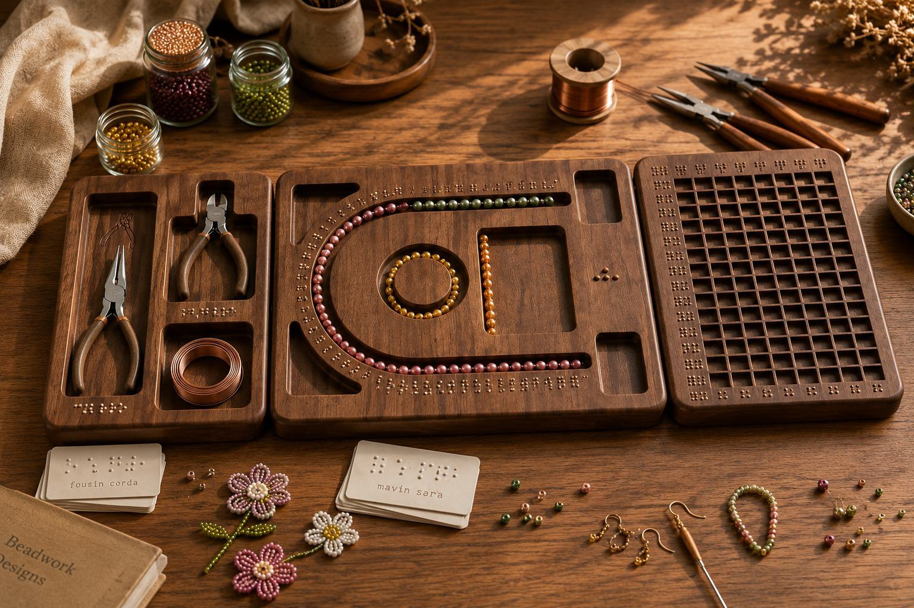
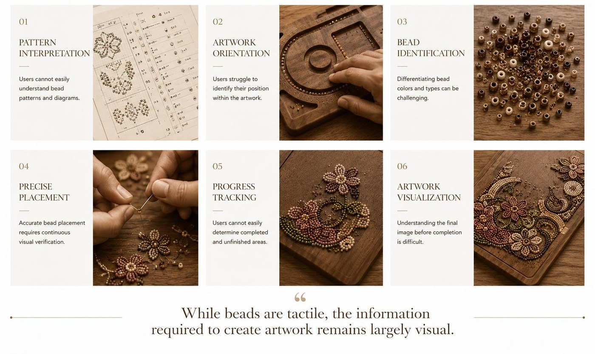
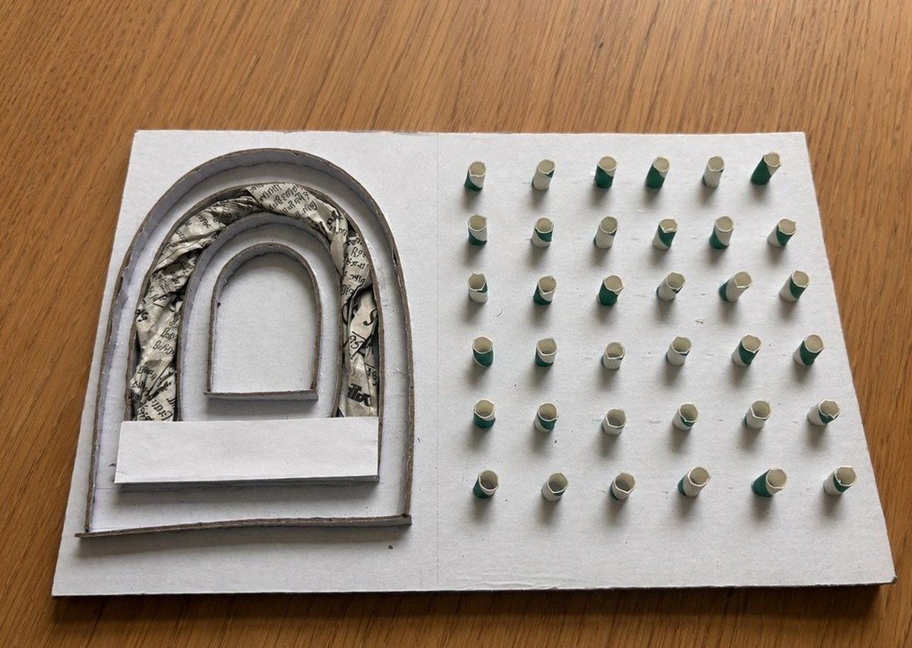
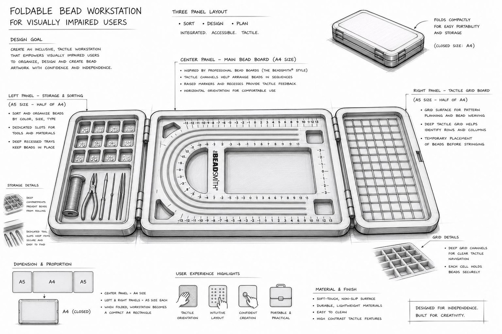
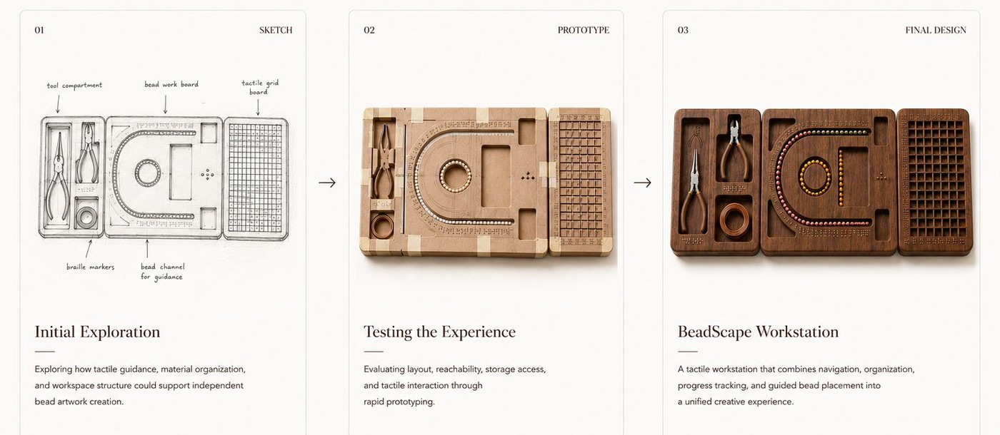
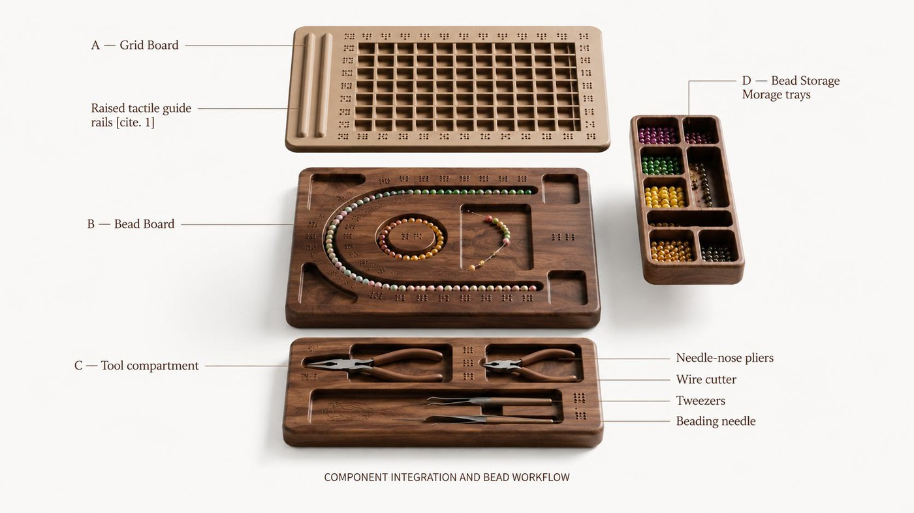
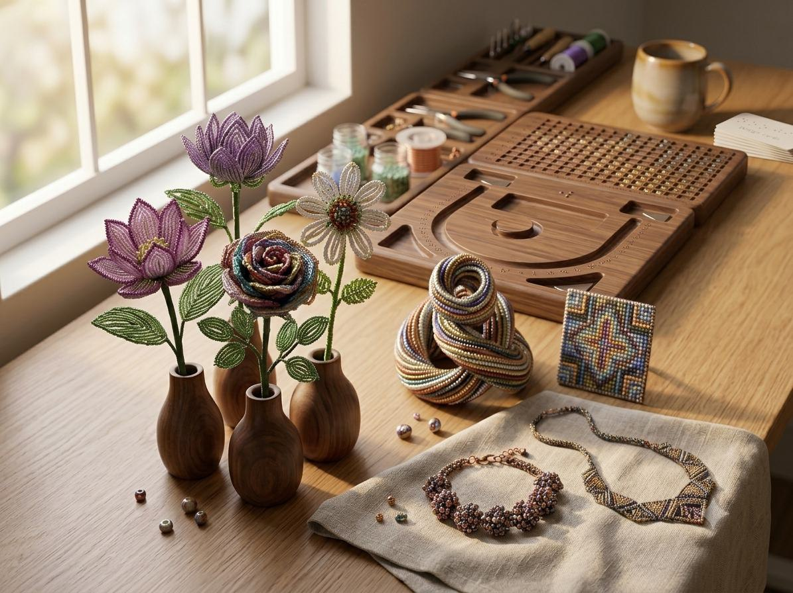

BeadScape is a guided bead art workstation designed for visually impaired creators, enabling independent, confident, and joyful artwork through tactile navigation, spatial guides, and organised material management.
Six recurring frictions stand between visually impaired creators and independent bead artwork — from reading a pattern to knowing when a piece is finished.

A guided workstation for visually impaired creators, designed so every surface enables confident, independent artwork.
Physical guides that anchor spatial position across the work surface, enabling users to move confidently without losing orientation.
Translating visual patterns into tactile, audio, or structured formats that can be understood without sight.
Designing every touchpoint of the experience so that no step requires sighted assistance, from setup through completion.
Tactile storage that makes every bead type immediately identifiable and retrievable, eliminating search time and reducing errors.
An early physical prototype exploring how raised guides and a tactile grid could help users orient themselves and navigate the workspace without relying on sight.

tactile orientation · spatial guidance · bead placement
The tactile pathway improved orientation, but the prototype still felt too restrictive for a fluid creative process. This led me to rethink how the workspace could guide without limiting expression.
A three-panel foldable workstation — sort, design, and plan — sized to fold down to a single A4 footprint for portability.



Precision grid surface with recessed bead guide holes and raised edge rails for orientation.
A tactile bead board designed to organize, sort, and guide bead placement through touch.
Integrated tray for tweezers, bead picks, and placement tools, kept in consistent, findable positions.
Six individually labeled compartments with tactile identifiers. Each well holds one bead type.
Sessions with visually impaired participants validated the tactile board, tool layout, and material organisation before the final walnut build.

“A creative tool designed not only for making artwork, but for making artistic independence possible.”